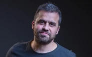
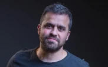

Desafio social
Pablo Marçal

 
 PRA COMEÇAR, ESSE GARANHÃO TOMOU UMA CADEIRADA DE UM SENHOR DE IDADE KKKKKKKKKKKK
Influenciador, político e empresário, Pablo Marçal possui uma fortuna milionária e milhões de seguidores nas suas redes sociais. Quem acompanha o influenciador, busca aprender com ele, os segredos para desbloquear a mente e ter resultados acima da curva, não só do ponto de vista financeiro, mas também, de controle emocional.
Pablo Henrique Costa Marçal nasceu em Goiânia, em 18 de abril de 1987. Hoje, ele é conhecido por muitas coisas: empresário, político, escritor e influenciador digital.
Sua vida é cheia de histórias e conquistas, e ele ganhou fama principalmente por suas palestrasmotivacionais e cursos que prometem ajudar as pessoas a desbloquear todo o seu potencial.
Desde pequeno, Pablo sempre teve um jeito empreendedor e uma habilidade incrível de se comunicar com os outros.
Com o tempo, ele transformou essas qualidades em um verdadeiro impérioempresarial, acumulando uma bela fortuna.
Ele tem várias empresas em diferentes áreas e é conhecido por identificar boas oportunidades e transformar ideias em negócios lucrativos.
Além de ser empresário, Pablo também se aventurou na política. E a política, como sabemos, é cheia de desafios e polêmicas. Mas isso não assustou Pablo, que mergulhou de cabeça nesse mundo.
Claro, isso acabou atraindo algumas controvérsias. De vez em quando, ele está no centro das atenções por causa de alguma declaração polêmica ou disputa judicial, especialmente relacionada à sua vidapolítica.
E não para por aí. Pablo também é escritor e já lançou vários livros. Em seus livros, ele compartilha suas visões de mundo, estratégias para alcançar o sucesso e suas próprias experiências de vida.
Nas redes sociais, Pablo é super ativo e tem milhares de seguidores. Ele usa essas plataformas para compartilhar suas ideias e motivar seus seguidores. Seus posts variam bastante: ele fala sobre empreendedorismo, faz reflexões sobre a vida e, claro, promove seus cursos e palestras.
Então, resumindo, PabloHenriqueCostaMarçal é um cara multifacetado, com influência em várias áreas. Sua história mostra como a determinação e a habilidade de se comunicar podem abrir muitas portas e criar várias oportunidades de sucesso.
Redes Sociais
 @pablomarcal
@pablomarcal
Canal Pablo Marçal